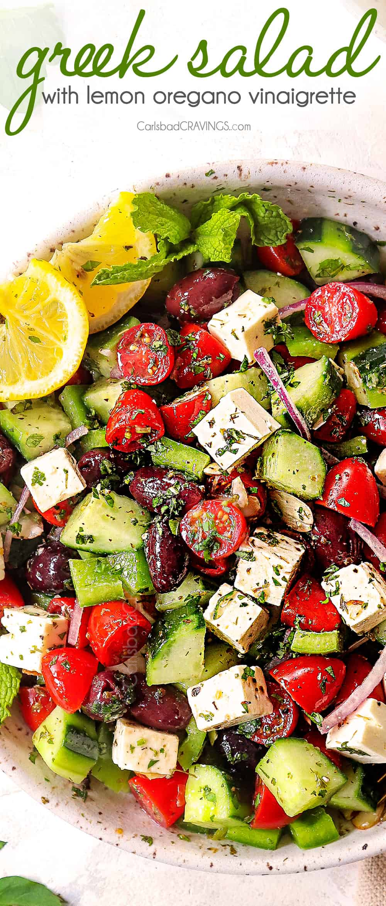

Greek Salad

Description
This easy Greek salad recipe is our new favorite summer side dish!
Just 7 ingredients + a simple Greek salad dressing make it refreshing & delicious.
Ingredients
- Cucumbers
- Tomatoes
- Red Onion
- Olives
- Green Bell Peppers
- Feta Cheese
- Olive Oil
- Red Winegar
- Garlic
- Oregano
- Dijon Mustart
- Salt, pepper
Steps
- Make the dressing: whisk together the olive oil,
vinegar, garlic, oregano, mustard, salt, and several
grinds of pepper
- Arrange the cucumber, green pepper, cherry tomatoes,
feta cheese, red onions, and olives.
- Drizzle with the dressing and very gently toss.
- Sprinkle with a few generous pinches of oregano and top with the mint leaves
- Season to taste and serve